Префектура Симанэ · Идзумо и Мацуэ · ремёсла
Посуда мингэй в Идзумо и Мацуэ: музей, три мастерские и сковородка для яиц
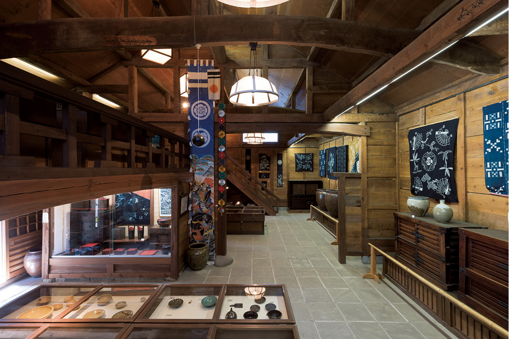
Префектуру Симанэ называют святой землёй мингэй: в 1930-х сюда приезжали отцы этого движения, и их уроки до сих пор живут в местных мастерских. Мы проехали от Идзумо до Мацуэ за посудой, которую делают для каждого дня.
Мингэй
Почему за посудой едут в Симанэ
Из поездки хочется привезти вещь, которая выросла на этой земле. В Симанэ такой вещью чаще всего оказывается посуда. Мингэй, движение за красоту простых вещей, сделанных руками, здесь не музейное понятие: мастерских много, и почти в каждой можно купить то, чем пользуются дома.
В конце 1920-х и в 1930-х годах Симанэ посещали главные люди движения. Философ Соэцу Янаги (1889–1961) придумал само слово «мингэй» и учил видеть «красоту пользы» в обычной утвари. Керамист Кандзиро Каваи (1890–1966), уроженец Симанэ, искал красоту в посуде для обычной жизни. Англичанин Бернард Лич (1887–1979) соединил в своей керамике английскую и японскую традиции. Их советы местные гончары передают дальше уже несколько поколений.
Наш проводник по маршруту, байер и куратор, много лет отбирает вещи для магазинов, пишет книги о том, как их продавать, и ведёт занятия для мастеров. Симанэ он называет одним из самых богатых на мингэй мест в Японии.
Музей
Музей мингэй Идзумо: начать с коллекции
Лучше всего понять, насколько богато здешнее ремесло, помогает Музей мингэй Идзумо. Здесь собраны керамика, лаковая посуда, изделия из дерева и ткани, в основном из Симанэ, но есть вещи и со всей страны.
«Больше всего я люблю жаровню хибати в самой глубине западного зала. Это керамика Идзумо-Оцу, промысел, который со временем исчез. Она совершенно чёрная, с глубоким блеском, и выглядит потрясающе»
байер и куратор
В музейной лавке тоже стоит задержаться: её ассортимент подбирал хозяин лавки «objects» из Мацуэ, о которой речь пойдёт ниже.
Музей мингэй Идзумо
- Адрес
- префектура Симанэ, Идзумо, Тиимия-тё, 628
- Телефон
- +81 853-22-6397
- Часы работы
- 10:00–17:00 (вход до 16:30)
- Выходные
- вторник (если праздник, то следующий день), новогодние праздники
- Цены / Вход
- взрослые 800 иен, старшеклассники и студенты 500 иен, школьники 300 иен, дошкольники бесплатно
Сюссай-гама
Мастерская, которую основали пятеро друзей
Мастерскую Сюссай-гама в Идзумо в 1947 году открыли пятеро местных парней. Учились они у Соэцу Янаги, Кандзиро Каваи, Бернарда Лича и керамиста Сёдзи Хамады (1894–1978), который работал в Масико, а потом ездили перенимать приёмы в другие гончарные центры страны. Глину, глазури и даже дрова для печи здесь берут местные. Сегодня в мастерской работает больше десятка гончаров, и делают они ту же повседневную посуду.
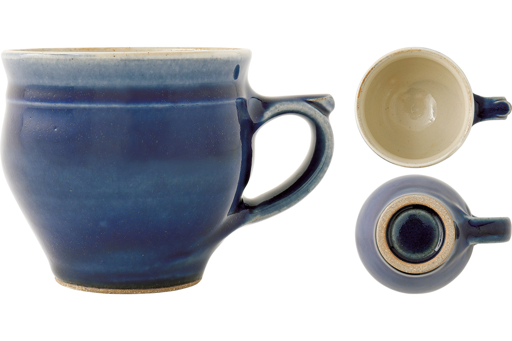
«Сюссай-гама одна из важнейших мастерских в мире мингэй. Я каждый день пью из их утренней кружки, и у неё очень продуманная ручка. Оказывается, ручки здесь учил прилеплять сам Бернард Лич, тут уж нечему удивляться»
байер и куратор
Кобальтовую глазурь мастерской называют «синим Сюссай». Оттенок и форма у каждой кружки чуть разные, и в этом их обаяние. Ещё одна радость для гостя: мастерскую и многокамерную печь нобори-гама рядом с выставочным залом можно осмотреть в любой день, кроме выходного. По соседству работают пекарня-кафе и магазин.
Чайник для ходзитя
Стилист, выросшая в Токио и когда-то сама учившаяся керамике, выросла на ходзитя, обжаренном зелёном чае. Мама учила её: дорогой сэнтя для гостей заваривают остывшей водой и не торопясь, а ходзитя для семьи после еды льют кипятком и щедро.
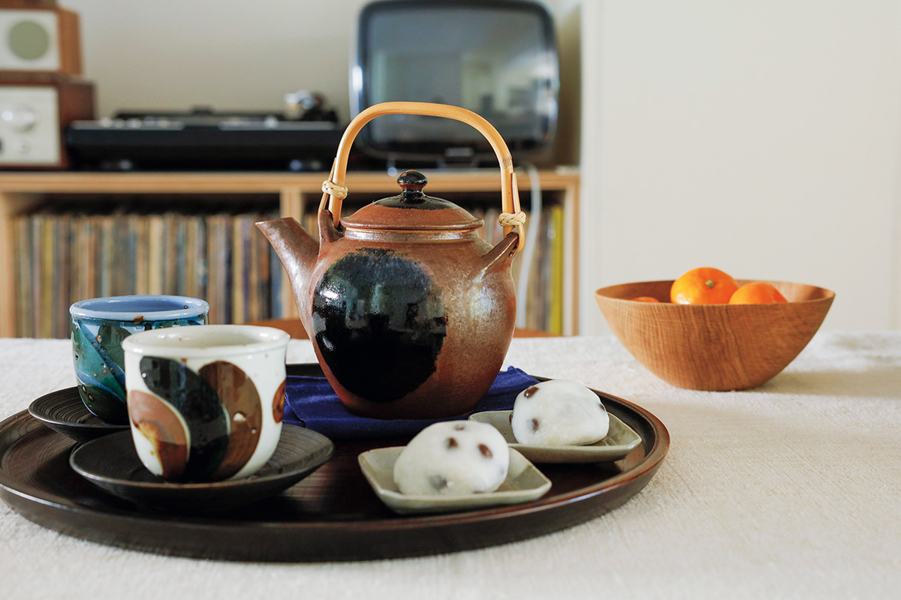
Несколько лет назад она научилась правильно заваривать сэнтя, и у каждого чая появилось своё время. Сэнтя она пьёт после обеда или тихим вечером, а ходзитя за едой, много и горячим. Для сэнтя нашёлся маленький чайник из Токонамэ, а для ходзитя после долгих поисков пришёл вот этот «марумон добин», чайник с круглым узором из Сюссай-гама. Он широкий, добродушный, и кажется, что чай в нём сам получится вкусным.
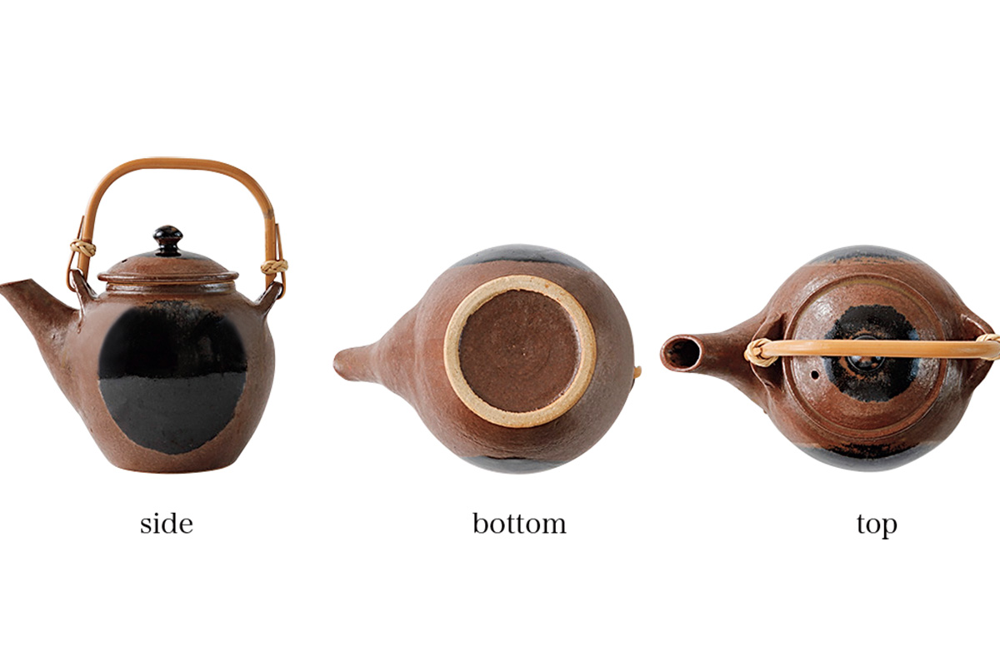
Между 1955 и 1964 годами мастера изучали старые образцы и искали форму, которая была бы именно сюссайской. За полвека чайник понемногу менялся: улучшали носик, отверстия ситечка внутри. Гончар, который делал эти чайники с двадцати лет, ушёл на покой в 2016 году, и теперь его работу перенимает молодой мастер.
Чашки к нему стилист случайно нашла на блошином рынке. Их делали в мастерской финской фабрики «Арабиа» по рисунку супругов-дизайнеров, и их спокойные краски и свободные линии совпали с чайником. Форма у них как у японских чашек юноми. Вместе получается и современно, и уютно, как в старой японской гостиной тяноме.
Что ещё стоит знать об этом чайнике:
- Фон под узором покрыт красной глазурью из глины, которую берут у вершины холма за мастерской. После многих проб мастера увидели, что чёрная глазурь, нанесённая поверх неё кругом, не стекает и почти не даёт брака.
- Ручку плетут из ротанга, акебии или бамбука, и от неё зависит, удобно ли держать чайник. Ручки меняют, но мастера по ним стареют, и учеников не хватает.
- Дизайнер Сори Янаги (1915–2011), сын Соэцу Янаги, сделал для Сюссай-гама целую серию: чёрный чайник, тарелки, рисовые чашки. Впервые он приехал сюда в 1962 году, чтобы заказать урну для праха отца: Соэцу Янаги очень любил здешнюю чёрную глазурь.
Сюссай-гама, выставочный зал «Кураси но То Мудзисёкан»
- Адрес
- префектура Симанэ, Идзумо, Хикава-тё, Сюссай, 3368
- Телефон
- +81 853-72-0239
- Часы работы
- 9:30–18:00
- Выходные
- вторник (в праздники открыто)
- Сайт
- shussai.jp
Юмати-гама
Керамика у онсэна и английская сковородка для яиц
Мастерская Юмати-гама стоит рядом с онсэном Тамацукури. Его источники воспевала ещё Сэй-Сёнагон (годы жизни около 966–1025), придворная дама эпохи Хэйан и автор «Записок у изголовья». Мастерская относится к керамике Фудзина, которую делают в этих местах с эпохи Эдо, и работает с 1922 года. Сегодня за кругом стоят мастер третьего поколения и его сын, мастер четвёртого.
Раньше здесь делали жаровни хибати и другую утварь. Потом прежний хозяин проникся идеями мингэй и начал делать посуду и вазы для цветов. Технике слипвэр, росписи жидкой глиной, его учил сам Бернард Лич. Глина и глазури местные, а цвета глубокие и тёплые.
«Мне нравится их узнаваемый вкус, такой же, как у слипвэра. В Юмати-гама есть какая-то простота, от которой становится спокойно»
байер и куратор
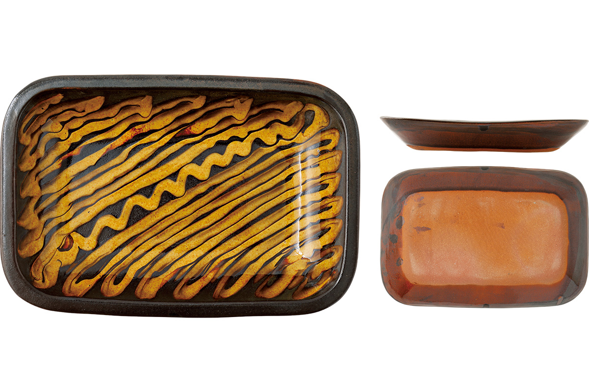
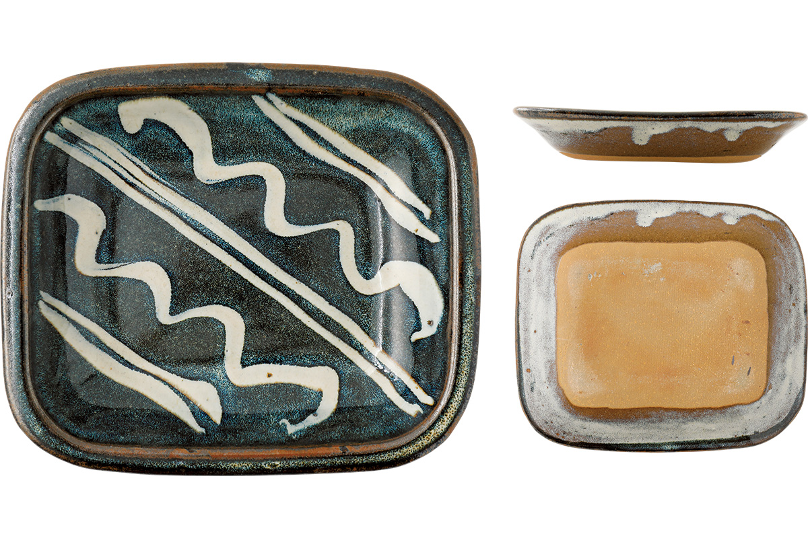
Сковородка для яиц из Англии
Самая известная вещь Юмати-гама это «эгг-бейкер», маленькая глиняная сковородка для яиц с крышкой и блюдцем. Она тоже появилась по совету Бернарда Лича, поэтому многим кажется, что в её круглых боках и тёплых цветах есть что-то европейское. С тех пор её делают в том же виде.
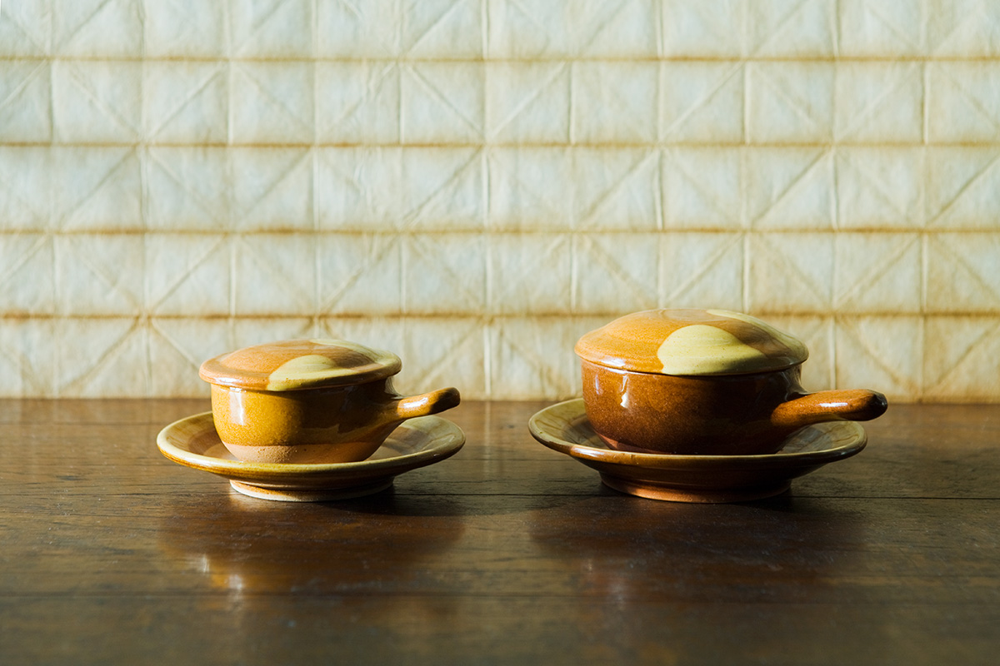
Хотя это керамика, её можно ставить прямо на огонь, а потом нести на стол и есть из неё. Держать такую вещь только ради яичницы жалко, и кулинарный исследователь, большая любительница яиц, придумала для неё ещё шесть блюд. Но сначала основа.
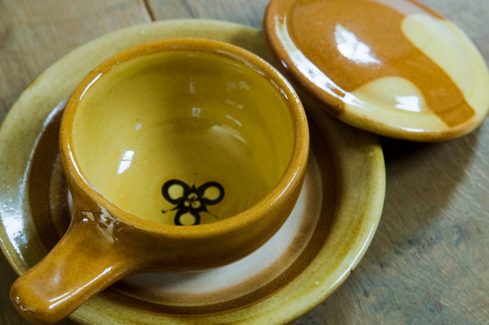
Яичница с жидким желтком
Поставьте на газовую плиту решётку для рыбы или моти, а на неё сковородку. Разбейте в неё одно яйцо, масло не обязательно. Можно и смазать, а со сливочным маслом будет ароматнее.
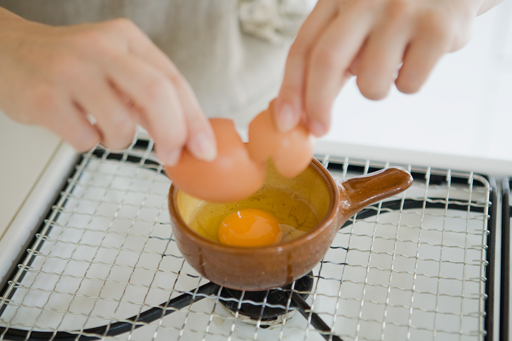
Сразу накройте крышкой и держите на огне 3–4 минуты. Главное здесь огонь: пламя не должно выходить из-под дна, то есть он должен быть совсем слабым.
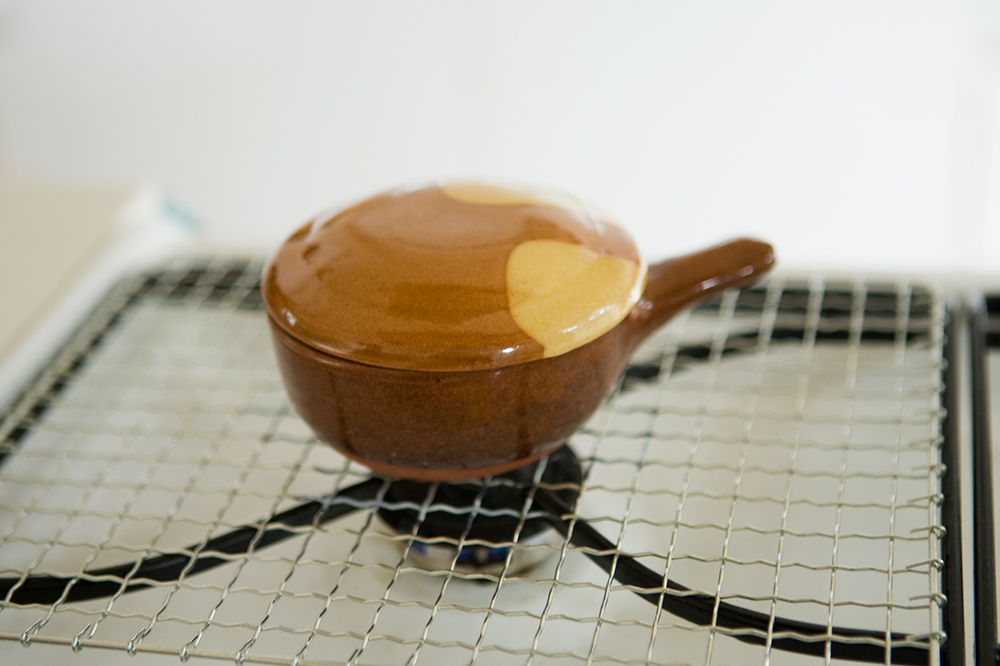
Снимите крышку и посмотрите на белок. Когда он побелел по краям, а желток ещё совсем сырой, пора переходить к следующему шагу.
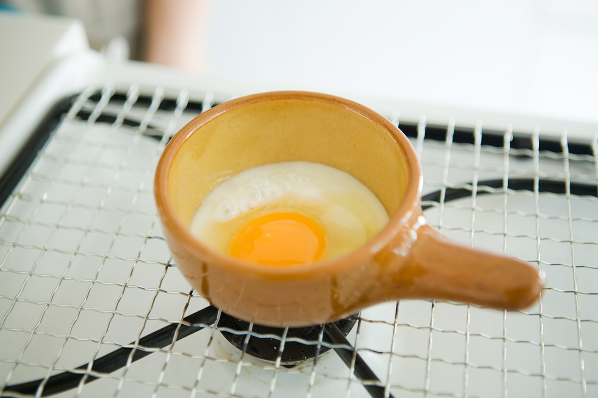
Снова накройте, выключите огонь и переставьте сковородку на блюдце. Минут через пять тепло самой глины доведёт яйцо до готовности. Открываешь крышку, и невозможно не улыбнуться.
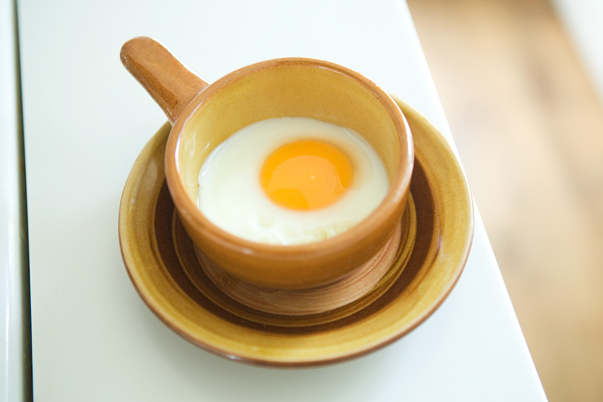
Шесть блюд в одной сковородке
Все рецепты рассчитаны на одну большую сковородку.
Оякодон в кокотнице. Курица 25 г, четверть луковицы, 1 яйцо, бульон даси 25 мл, по 1/2 ст. л. мирина, сакэ и соевого соуса, 1/2 ч. л. сахара, мицуба по вкусу. Курицу режут мелкими кусочками, лук поперёк волокон ломтиками по 5 мм, яйцо слегка взбалтывают, не разбивая белок. Даси с приправами доводят до кипения на среднем огне, кладут курицу, а когда она почти готова, лук, и полторы минуты томят на слабом огне. Яйцо вливают от центра к краю, накрывают крышкой, а когда оно схватится наполовину, снимают с огня. Сверху мицуба, по желанию японский перец сансё. Сковородку подают рядом с маленькой миской белого риса.
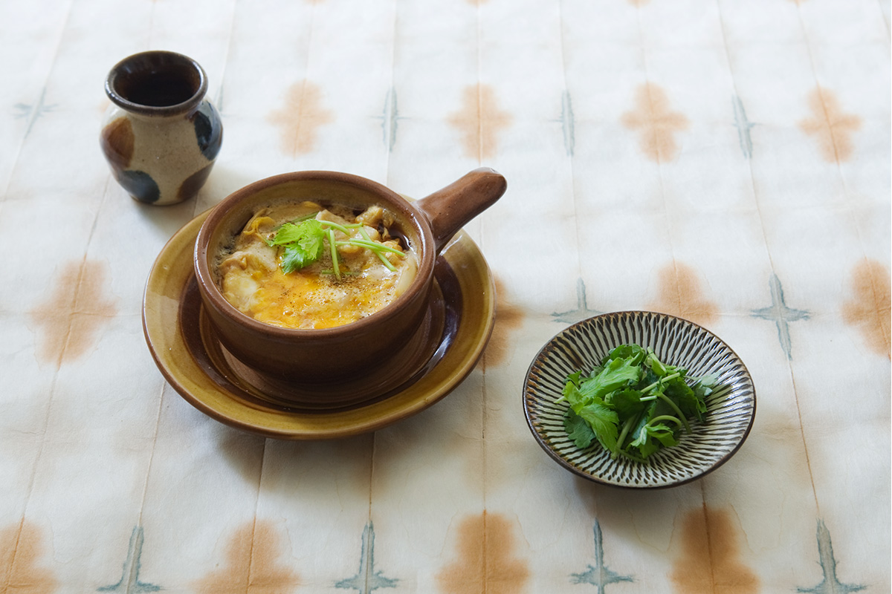
Яйцо в томатах. 1 яйцо, 3 помидора черри, 1 ч. л. оливкового масла, соль и перец. Помидоры режут на четыре части, обжаривают в масле, солят, перчат и под крышкой томят, пока они не станут мягким соусом. Потом разбивают яйцо, накрывают и держат 3–4 минуты на среднем огне. Когда белок побелел, а желток ещё не изменился, огонь выключают и 4–5 минут доводят на блюдце.
Омлет с луком и сыром. Четверть луковицы, 1 ст. л. пармезана, 1/2 ст. л. оливкового масла, соль. Лук тонко режут и обжаривают в части масла. Яйцо взбивают с луком, сыром и солью. В сковородке греют остальное масло, вливают смесь и помешивают на среднем огне, пока она не станет полужидкой. Затем накрывают, убавляют огонь и пекут 1–2 минуты, пока поверхность не подсохнет. Посуда маленькая, поэтому начинки лучше брать немного.
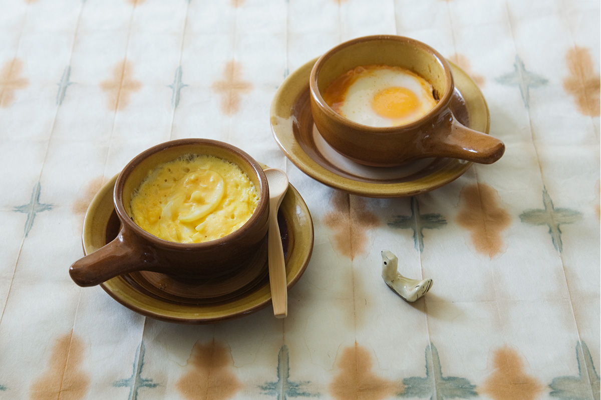
Грибы и креветки в масле. Для грибов: 3–4 шампиньона, 1/4 стакана оливкового масла, зубчик чеснока, соль, перец, петрушка. Масло с раздавленным чесноком греют на слабом огне, а когда пойдёт аромат, кладут половинки грибов на минуту, солят, перчат и посыпают петрушкой. Для креветок: 4 креветки, 5 ст. л. оливкового масла, половина зубчика чеснока, 1 стручок острого перца, веточка тимьяна, соль и перец. Креветки чистят, промывают в солёной воде и так же томят в ароматном масле, пока не покраснеют. К вину лучше закуски не придумать.
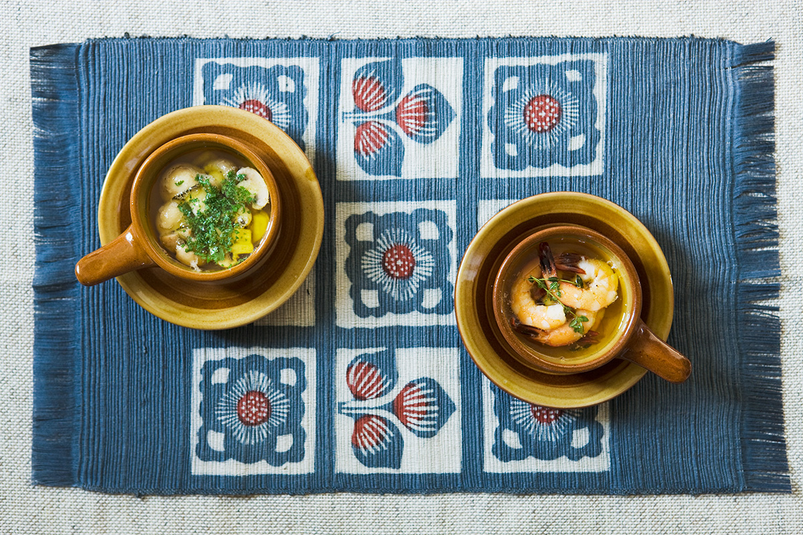
Лосось с грибами на пару. Треть куска лосося, пучок грибов симэдзи, соцветие брокколи, 2 ч. л. сакэ, соль, лайм судати и соевый соус. Лосось солят, кладут в сковородку, сбрызгивают сакэ и 2 минуты держат под крышкой на среднем огне. Когда рыба по краям посветлеет, добавляют грибы и брокколи ещё на 1–2 минуты. Подают с судати и соевым соусом.
Белый рис. 1/4 стакана риса и 65 мл воды. Рис промывают и оставляют на 30 минут, затем заливают водой, накрывают и ставят на средний огонь. После закипания убавляют огонь и держат 4 минуты, потом снимают и 4–5 минут доводят на блюдце. Выходит примерно одна небольшая чашка. Следите за огнём: вода может убежать.
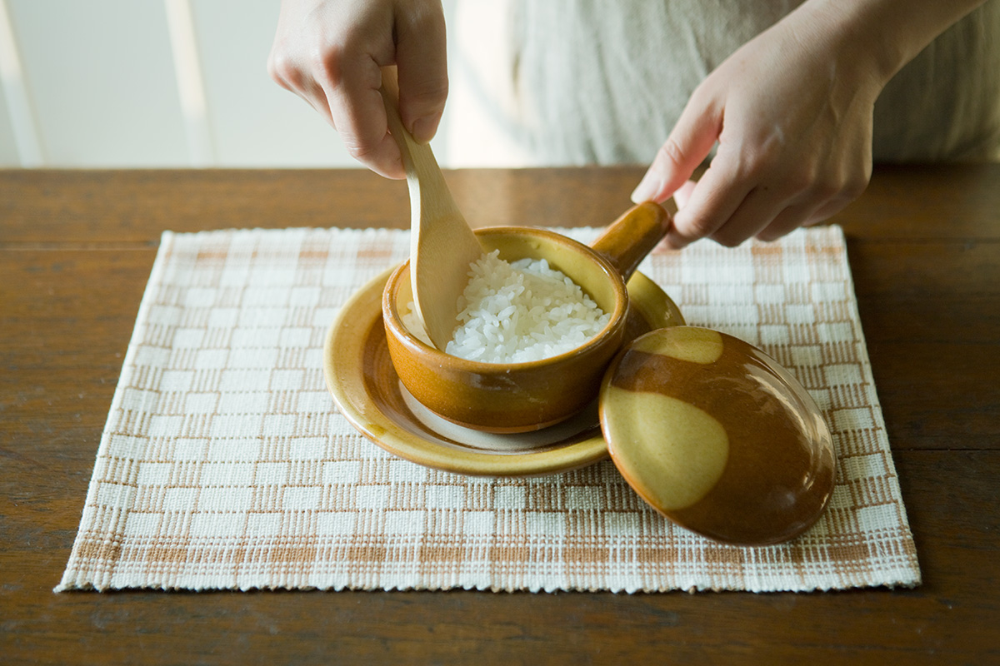
Юмати-гама
- Адрес
- префектура Симанэ, Мацуэ, Тамаю-тё, Юмати, 965-1
- Телефон
- +81 852-62-0726
- Часы работы
- 8:00–17:00, в субботу, воскресенье и праздники 9:00–17:00
- Выходные
- нерегулярные
Лавки
Мацуэ: посуда со всей страны и подарки из Симанэ
Мастерских в Симанэ так много, что всё объехать за одну поездку не получится. Посуду разных мастеров удобно посмотреть в лавках Мацуэ, где их отбирают сами хозяева.
Лавка «objects» стоит на берегу реки Охаси, в каменном здании. На полках аккуратно разложены посуда, вещи из дерева и ткани от мастеров со всей Японии.
«Здесь отличный выбор. Именно тут я купил плетёную подставку под чайник, и мне очень нравится, насколько современно она сделана»
байер и куратор
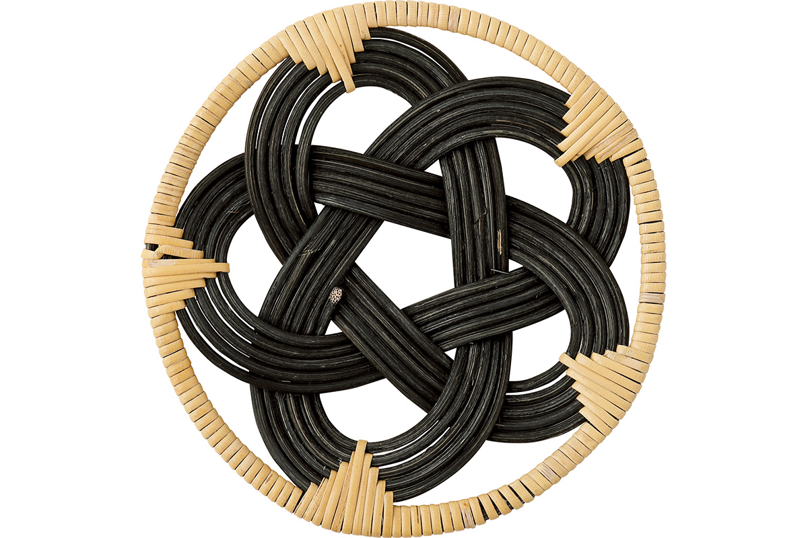
Подставку сплёл мастер бумаги мингэй из Идзумо. Он учился у мастера ротангового плетения Мацуэ, ремесла, которое ведёт начало от княжества Мацуэ, и освоил то, что почти некому передать: ручки для глиняных чайников и подставки под них. Такую подставку можно просто повесить на стену.
objects
- Адрес
- префектура Симанэ, Мацуэ, Хигаси-Хоммати, 2-8
- Телефон
- +81 852-67-2547
- Часы работы
- 11:00–19:00
- Выходные
- нерегулярные
- Сайт
- objects.jp
В Мацуэ мы зашли и в «YUTTE», лавку подарков из Симанэ. Здесь собирают наборы из местных ремёсел и еды: покупатель выбирает, что положить, а под содержимое делают коробку, и в каждую кладут карточку о том, где и кем сделана вещь. Заказ принимают от 10 наборов, о меньшем количестве можно договориться.
«Здесь продают только хорошие местные вещи. Для подарков большой компании лучше не придумать»
байер и куратор
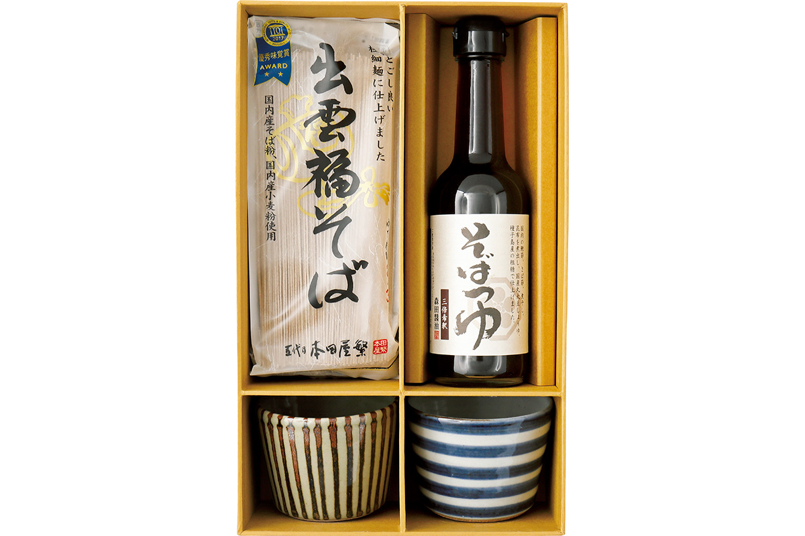
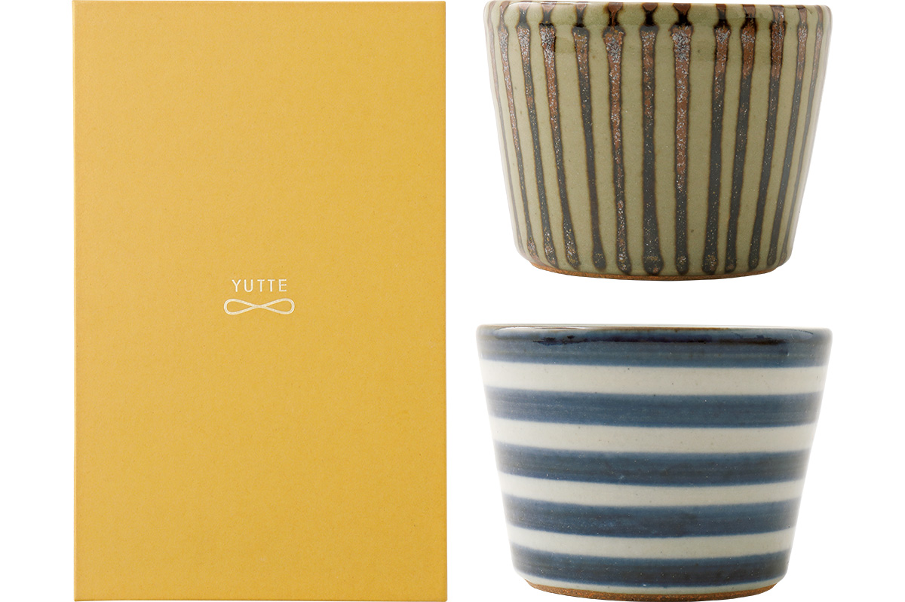
В набор вошли чашки для соба мастерской Содэси-гама из Мацуэ, гречневая лапша и соус из Симанэ. Содэси-гама работает с 1877 года. Мастер третьего поколения учился у людей движения мингэй и передал ремесло четвёртому и пятому поколениям. Сырьё мастерская берёт местное и делает посуду для повседневной жизни.
Ужин
«Цубамэя» в Идзумо
Вечером в Идзумо наш проводник советует «Цубамэя»: «Вкусная еда и японское сакэ, я это место обожаю». Здесь без церемоний готовят из сезонных продуктов.
«Цубамэя»
- Адрес
- префектура Симанэ, Идзумо, Имаити-тё, 651
- Телефон
- +81 853-20-1230
- Часы работы
- 15:00–22:00 (последний заказ 21:30)
- Выходные
- нерегулярные
Маршрут
Два дня с посудой
Время в пути указано на машине.
День первый
- Аэропорт Идзумо Энмусуби, 32 минуты до святилища Идзумо-тайся
- Святилище Идзумо-тайся и улица перед ним, 19 минут до музея
- Музей мингэй Идзумо, 39 минут до Юмати-гама
- Юмати-гама, 39 минут до «Цубамэя»
- Ужин в «Цубамэя», 42 минуты до ночлега
- Ночь в онсэне Тамацукури
День второй
- Из онсэна Тамацукури в Мацуэ, 17 минут
- Замок Мацуэ, 6 минут до лавки «objects»
- «objects», затем Сюссай-гама
- Сюссай-гама
После такой поездки обязательно появится план следующей: к какому мастеру поехать в другой раз.
Фото: Норихито Судзуки, Юити Ногути, Сатоси Нагарэ.